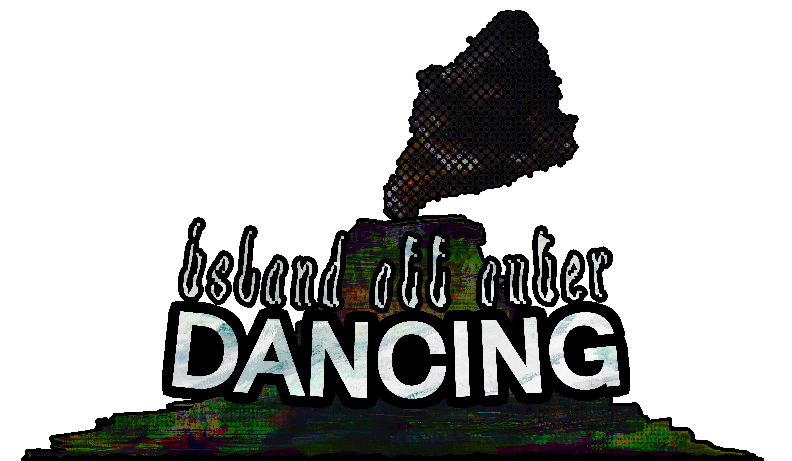

ARPGHwPt.VI-VIII — Persona Dancing Trilogy
Drifting quite far from anything resembling an Action RPG, I've been playing a shitton of the Persona dancing trilogy on PS4. For research. For my next game, Island Off Outer Dancing.

WIP logo.
Yeah this medium-sized asset-re-use rhythm game is the next one between IOOD and "game 4". Yo • to • Yo • ta has been indefinitely put on hold, unfortunately. Just couldn't figure out how to do it justice regarding narrative and gameplay cohesion. Maybe I'll revisit it someday, maybe I won't.
IOODancing is heavily and obviously inspired by Persona 4: Dancing All Night specifically, but also Persona 3: Dancing in Moonlight and Persona 5: Dancing in Starlight, 'cause those are, like, stylistic sequels to P4D (though much worse games). And the only way to play Persona 4: Dancing All Night on PS4 is to buy the P3D/P4D/P5D bundle. So instead of just one homework assignment, I bought a homework packet 😌.
Persona 4: Dancing All Night is a real video game and not just a digital product designed to sell an initial purchase and extra DLC (though it is that, of course). It's got, like, a story mode, which is really hammy but enjoyable, it's got like actual remixes of songs that aren't ass, the gameplay is good, the characters that dance all have dances that fit their personalities mostly, there's comprehensive extra content (a glossary of Persona 4 things, character breakdowns, song information, tracking of in-game statistics, a jukebox, etc.), and it's all in, like, a real and not fake package. Doesn't feel hyper-optimized and stripped as bare as possible. And the music's good, again, I like the music. And the gameplay's good. Like I cannot stress enough, it's just good and enjoyable and real and doesn't feel predatory.
Persona 3: Dancing in Moonlight is so much less a real video game. It doesn't have any extra bits and bobs, and doesn't have a story, really. It's just characters from Persona 3 dancing and sometimes talking, and it has three separate DLC passes and 6 different entirely-separate $4.99 DLC purchases. It's disgusting and predatory. Some of the remixes are pretty good and some of them are like quite ass. It's genuinely depressing how hollow of an experience it is when I think about it.
Persona 5: Dancing in Starlight is the least-real video game of the trio. It's about as hollow as Persona 3: Dancing in Moonlight except it's like the first Persona 5 spinoff ever released, so. It just doesn't include any content that came out after Persona 5's base release, which makes it feel even emptier. P4D includes stuff from Golden and Q and Arena and the P4 anime, and P3D includes stuff from FES and Portable and the P3 movies. P5D don't have any of that, just like one DLC song that is the opening to the P5 anime, iirc. They never came back to the game to add more, and they didn't wait, so. Just a hollow, empty nothingness. Whatever. It's also, difficulty-wise, in-between P4D (easy) and P3D (at times very hard), so. It's nothing.
There's definitely more to say about Persona 4: Dancing All Night but I've wrung dry the stones of P3D and P5D. Buuuuut I don't really feel like talking about P4D. I've gotta work on IOODancing. Coming this summer. For free.
4/22/26 11:29:14 AM CST